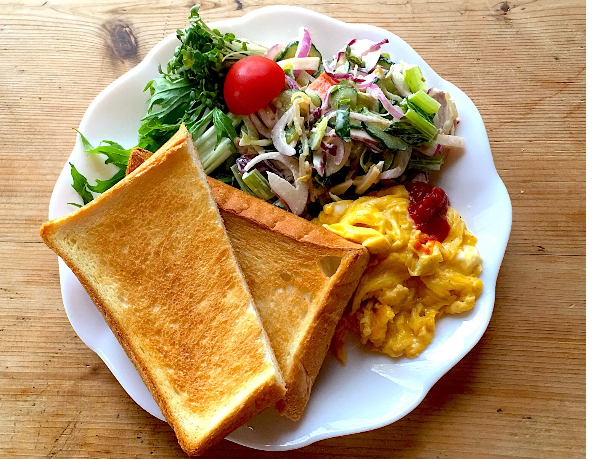
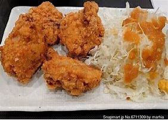
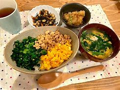

{% extends 'baseuser.html' %}

{% block title %}主菜選択{% endblock %}

{% block content %}
    <!-- メインコンテンツ -->
    <div class="main-content">
        <h1>主菜選択</h1>

        <!-- 画像を横並びに表示 -->
        <div class="image-container">
            <div class="image-item">
                
                <label>朝</label>
            </div>
            <div class="image-item">
                
                <label>昼</label>
            </div>
            <div class="image-item">
                
                <label>晩</label>
            </div>
        </div>

        <!-- 登録完了メッセージ -->
        <p class="confirmation-message">主菜の登録が完了しました</p>

        <!-- 戻るボタン -->
        <button class="back-button" onclick="window.history.back()">戻る</button>
    </div>
{% endblock %}